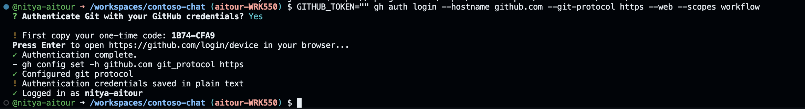

Skillable-Based Setup¶
This is the start of the instructor-guided track for this workshop. We use the Skillable VM - a lab-on-demand platform with a built-in Azure subscription and pre-provisioned resources - to give you a fast start.
WERE YOU LOOKING FOR THE SELF-GUIDED OPTION INSTEAD? You can find that here.
1. Launch Skillable VM¶
To continue with Skillable-based Setup, you will need the Lab Launch URL (link or QR Code) given to you by your instructor at the start of the session. On completing this step, you should have:
- The Skillable VM tab open, with the Azure subscription details shown.
- The Skillable countdown timer visible, with at least 1h 15 mins remaining.
- This instruction guide open, with this section in focus.
- (Optional) A Deploy button that was clicked, and shows Successful completion.
If you already completed these steps in-venue with instructor help, then skip ahead to Step 2. Otherwise, expand the section below to complete the task now.
GET STARTED: Launch Skillable VM and Open Workshop Guide
The lab instructor should have shared a Skillable Lab link (URL or QR Code).
- Open the browser and navigate to the link - locate WRK 550 in the page.
- Click the Launch button - wait till the launched page completes loading.
- (Left) You will see a login screen - we can ignore this for now
- (Top Right) You will see a countdown timer - it should start at 1hr 15 mins.
- (Below that) You MAY see a Deploy button - we will use this, next.
- (Below That) You should see the instructions panel - we'll validate this, after.
- Review other Instructions Panel details:
- Check the lab title - should be Build a Retail Copilot Code-First on Azure AI
- Check the Azure subscription - should have username & password details filled in
- Check the Workshop guide link - should open to a hosted version of this guide.
Skillable pre-provisions resources for the application, including an Azure Container Apps resources with a default endpoint. During setup, we want to update this endpoint with an initial version of our Contoso App.
TO DEPLOY ACA: Pick the option that reflects your SKillable VM setup
Some Skillable VMs may be setup to show you a Deploy button in the Instructions Panel. If you see this option in your VM follow these steps:
- Click the button to start Azure Container Apps deployment
- Wait for active progress indicator to complete. Takes ~2 minutes.
- Wait for Successful status message. This indicates deployment worked.
- If you see an Error message - wait a minute, then click Deploy again.
- If you do not succeed after a second retry, then ask a Proctor to help.
If you Skillable VM was not setup with a Deploy button, that's okay. It just means you will complete this step manually using the commandline in the 4. Configure Env Variables section. The process takes the same amount of time but will provide feedback via the terminal. We'll remind you of this step at that time.
Leave the Skillable tab open in your browser. We'll use the Azure credentials in the next step. And we'll revisit this tab at the end, to complete lab teardown. You can also track remaining lab time in the countdown timer.
2. Launch GitHub Codespaces¶
The Contoso Chat sample repository is instrumented with a dev container which specifies required tools and dependencies. Simply launch this from GitHub Codespaces to get a pre-built development environment with a Visual Studio Code editor and Python runtime ready to go.
At the end of this step you should have:
- Launched GitHub Codespaces to get the pre-built dev environment.
- Forked the sample repo to your personal GitHub profile.
- Verified that required command-line tools were installed.
2.1 Navigate to GitHub & Login¶
-
Open a browser tab (T1) and navigate to the link below.
In codeblocks like this, click the icon (far right) to copy text to clipboard!
1https://aka.ms/contoso-chat/prebuild -
You will be prompted to log into GitHub. Login now with your GitHub profile.
2.2 Setup GitHub Codespaces¶
-
You will see a page titled "Create codespace for Azure-Samples/contoso-chat"
- Check branch is
msignite-LAB401 - Check dev container config is
Contoso Chat (v2) - Click dropdown for 2-core and verify it shows
Prebuild ready
Using the pre-build option makes your GitHub Codespaces load up faster. We will use the
msignite-LAB401prebuild since that has the latest version of the codebase and instructions for this workshop. - Check branch is
-
Click the green "Create codespace" button
- You should see a new browser tab open to a link ending in
*.github.dev - You should see a Visual Studio Code editor view loading (takes a few mins)
- When ready, you should see the README for the "Contoso Chat" repository
The README is for information only. Please continue to follow this guide for the workshop.
- You should see a new browser tab open to a link ending in
2.3 Fork Repo To Your Profile¶
Your GitHub Codespaces is running on the original Azure Samples repo for this sample. We'll fork this to get a personal copy we can modify and revisit later. Let's use the GitHub CLI to do this!
-
Run this command in the terminal to authenticate using the GitHub CLI.
The command ensures we complete auth flow from a web broaser using the Git protocol over a secure HTTPS connection with scope limited to workflow actions. By using an empty GITHUB_TOKEN, we ensure that we don't accidentally use an existing token with broader scope. Expand the sections below to see screenshots from each step, for reference.1GITHUB_TOKEN="" gh auth login --hostname github.com --git-protocol https --web --scopes workflow1. Complete Device Activation flow
- Say "Yes" when prompted to authenticate with GitHub credentials
- Copy the one-time code provided in the console
- Press "Enter" to open the Device Activation window
-
Copy the code into that window as shown below
Here is an example of what that looks like:

2. Confirm GitHub authorization scope
- You should see this authorization dialog on activation
- Click the green "Authorize github" button to continue
-
This gives the GitHub CLI (this session) permission to do the fork

3. Verify you are Logged in.
-
The console log should show you are logged in successfully

-
Run this command next, to fork the repo to your personal profile.
1GITHUB_TOKEN="" gh repo fork --remoteYou should see: a
Created fork..message followed byAdded remote origin ... On completion, you should have a fork of the repo in your personal profile and your local Codespaces environment will now be setup to commit changes to your fork. Verify this by visiting your GitHub profile page - you should see acontoso-chatrepository listed.
2.4 (Optional) Validate Tools¶
The workshop uses the following tools and commands: python, fastapi, prompty, az, azd. These are pre-installed in the devcontainer, but you can verify this at commandline if needed.
OPTIONAL: Use these commands to verify required tools are installed
1 | |
1 | |
1 | |
1 | |
1 | |
3. Authenticate with Azure¶
To access our Azure resources, we need to be authenticated from VS Code. Make sure the Terminal pane is active in the GitHub Codespaces tab. Then, complete both steps below.
REMINDER: Use the Skillable-provided Azure Subscription for this step. Do NOT use a personal subscription!
1. Authenticate with az for post-provisioning tasks
-
Log into the Azure CLI
azusing the command below.1az login --use-device-code -
Copy the 8-character code shown to your clipboard, then control-click the link to visit https://microsoft.com/devicelogin in a new browser tab.
-
Select the account with the Username shown in the Skillable Lab window. Click "Continue" at the
are you sure?prompt, and then close the tab -
Back in the Terminal, press Enter to select the default presented subscription and tenant.
2. Authenticate with azd for provisioning & managing resources
-
Log into the Azure Developer CLI using the command below.
1azd auth login --use-device-code -
Follow the same process as before - copy code, paste it when prompted, select account.
- Note: you won't need to enter the password again. Just select the Skillable lab account.
CONGRATULATIONS. You are logged in from Azure CLI and Azure Developer CLI
4. Configure Env Variables¶
To build code-first solutions, we will need to use the Azure SDK from our development environment. This requires configuration information for the various resources we've already provisioned for you in the francecentral region. Let's retrieve those now.
-
Run the commands below in the same Visual Studio Code terminal.
1azd env set AZURE_LOCATION francecentral -e AITOUR --no-prompt1azd env refresh -e AITOUR(Press ENTER to select the default Azure subscription presented).
-
Verify the environment variables were refreshed.
The above commands will have created a
.azure/AITOUR/.envfile in your GitHub Codespaces environment with all the configuration information we will need to build our app. You can open the file from the VS Code file explorer or you can run the command below to view the values in the terminal:1azd env get-valuesNote that the
.envfile does not contain any secrets (passwords or keys). Instead, we use Azure Managed Identities for keyless authentication as a security best practice -
Update the Azure Container Apps instance to show the
Hello Worldversion.The pre-provisioned Skillable subscription has an Azure Container apps resource with a default endpoint setup. In this step, we push the initial version of the Contosot Chat application to the resource and update that endpoint by running this command:
1azd deployWait till the command completes - this may take a couple of minutes but you should see progress updates in the terminal. Wait till you get the "Success" message.
5. Do Post-Provisioning¶
We can now use these configured tools and SDK to perform some post-provisioning tasks. This includes populating data in Azure AI Search (product indexes) and Azure Cosmos DB (customer data), and deploying the initial version of our application to Azure Container Apps.
Return to the Visual Studio Code Terminal above:
-
Run the command below. (This will take a few minutes to complete.)
1bash ./docs/workshop/src/0-setup/azd-update-roles.shWe pre-provisioned the Azure resources for you using a service principal. In this step, we update the resource roles to allow user access so you can populate data in Azure AI Search and Azure Cosmos DB from code. This step is not required in self-guided mode where you provision all resources yourself.
-
Once complete, run the command below. It will take a few minutes to complete.
1azd hooks run postprovisionThis step runs the Jupyter Notebooks found in the relevant
data/subfolders, populating the Azure AI Search and Azure CosmosDB resources with product catalog (index) and customer profile (orders).This step should take just a few minutes to complete from the commandline.
CONGRATULATIONS. Your Skillable-based Setup is Complete! We'll Validate this, next!